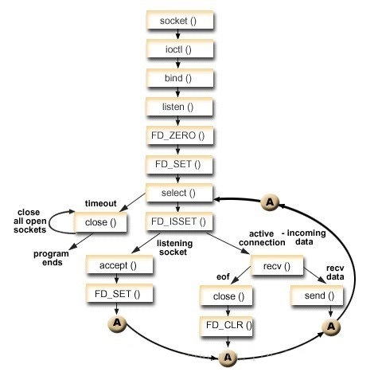

stdio.h
- int printf(const char *format, ...)：将内容输出到屏幕，成功返回输出的字符数，失败返回负值。
- %d：十进制有符号整数
- %u：十进制无符号整数
- %f：浮点数
- %s：字符串
- %c：单个字符
- %x/%X：十六进制
- %p：输出指针类型自身的值，也就是指针指向的地址值，十六进制形式
- %e：指数形式的浮点数
- %o：无符号以八进制表示的整数
- %g：把输出的值按照%e或者%f类型中输出长度较小的方式输出
- %lu：32位无符号整数
- %llu：64位无符号整数
- %ld/%lf：输出长整型，双精度浮点型 double
- 其他：\n 换行；\f 清屏并换页；\r 回车；\t 制表符；\xhh 表示用十六进制显示 ascii
1.可在 % 和字母之间加入数字表示最大场宽，若有小数点，小数点后的数为小数位数，小数点前面的数为小数点后数+小数点+小数前的整数部分
2.若字符串长度或整数位数超过场宽则按实际长度输出
3.浮点数的整数部分超过场宽按实际输出，小数部分超过则四舍五入
4.若想用0补齐则 % 后数字前加 0 即可
5.如果用非浮点数表示字符或整型量的输出格式，小数点后的数字代表最大宽度，小数点前的数字代表最小宽度，小数点后的数表示全部数据大于此时以后的数据内容将被删除
6.控制左对齐或右对齐，即在 % 和字母之间加个 - 减号即可表示左对齐，否则右对齐 - int fprintf(FILE *stream, const char *format, ...)：输出到流文件
stream：指向 FILE 对象的指针
format：字符串，包含写入参 1 的文本
第一个printf类似，只不过第一个是将流数据打印到屏幕，而这里是将流数据写入参 1 指定的文件中，直到遇到‘\0’为止。其中 format 参数代替值格式为 %[flags][width][.precision][length]specifier，具体如下：
specifier：说明符- c：字符
- d/i：有符号十进制整数
- e/E：科学记数法
- f：浮点数
- g/G：自动选择 %e/%E 或 %f 合适的表示法
- o：有符号八进制
- s：字符的字符串
- u：无符号十进制整数
- x/X：无符号十六进制整数
- p：指针地址
- n：无输出
- %：两个 % 即转义的 % 字符
- -：左对齐（默认右对齐）
- +：强制在结果前加入符号位（默认情况只有负数有显示 - 号符号位，而正数忽略）
- (space)：没有写入任何符号，插入空格
- #：与 o、x 或 X 说明符一起使用时，非零值前面会分别显示 0、0x 或 0X；与 e、E 和 f 一起使用时，会强制输出包含一个小数点，即使后边没有数字时也会显示小数点。默认情况下，如果后边没有数字时候，不会显示显示小数点；与 g 或 G 一起使用时，结果与使用 e 或 E 时相同，但是尾部的零不会被移除
- 0：在指定填充 padding 的数字左边放置零（0），而不是空格
- (number)：要输出的字符的最小数目。如果输出的值短于该数，结果会用空格填充。如果输出的值长于该数，结果不会被截断
- .number：对于整数说明符（d、i、o、u、x、X）：precision 指定了要写入的数字的最小位数。如果写入的值短于该数，结果会用前导零来填充。如果写入的值长于该数，结果不会被截断。精度为 0 意味着不写入任何字符；对于 e、E 和 f 说明符：要在小数点后输出的小数位数；对于 g 和 G 说明符：要输出的最大有效位数；对于 s: 要输出的最大字符数。默认情况下，所有字符都会被输出，直到遇到末尾的空字符；对于 c 类型：没有任何影响；当未指定任何精度时，默认为 1。如果指定时不带有一个显式值，则假定为 0
- .*：精度在 format 字符串中未指定，但是会作为附加整数值参数放置于要被格式化的参数之前
- h：参数被解释为短整型或无符号短整型（仅适用于整数说明符：i、d、o、u、x 和 X）
- l：参数被解释为长整型或无符号长整型，适用于整数说明符（i、d、o、u、x 和 X）及说明符 c（表示一个宽字符）和 s（表示宽字符字符串）
- L：参数被解释为长双精度型（仅适用于浮点数说明符：e、E、f、g 和 G）。
- int sprintf(char *str, const char *format, ...)：把格式化的数据写入某个字符串缓冲区
str：指向字符数组的指针
format：格式化字符串，包含了要被写入到字符串 str 的文本，格式化方式和fprintf类似，会自动在末尾加上空字符'\0'
返回值：成功返回写入的字符总数，不包括字符串追加在末尾的空字符，失败返回负数 - int snprintf(char *str, size_t size, const char *format, ...)：按size大小输出到字符串str
- __FILE__：当前程序文件名，包括路径
- __LINE__：当前文件下的代码行号
- __FUNCTION__：当前函数
- __TIME__：当前编译时间
- __DATE__：当前编译日期
- __STDC__：编译器是否遵循 ANSI C 标准，是为非 0 值
- int vsprintf(char *str, const char *format, va_list arg)：使用参数列表发送格式化输出到字符串
- FILE *fopen(char *filename, char *mode)：打开文件
filename：文件名，包括文件路径，两个反斜杠中第一个反斜杠为转义字符。
mode：打开方式。
- r：只读，并且文件必须已存在；
- b：二进制文件
- t：文本文件
- w：只写，若打开的文件不存在则以指定的文件名创建该文件，若文件已存在则将该文件删除重新创建新文件
- a：追加，若文件不存在则尝试创建该文件
- +：读写
- void setbuf(FILE *fp, char *buffer)：主要用于打开和关闭缓冲机制。
fp：标识一个打开的流
buffer：分配给用户的缓存，为 NULL 表示关闭缓存 - char *fgets(char *str, int n, FILE *fp)：从指定的流中读取数据，每次读取一行，读取的数据放入 str 中。
str：指向数组的指针，数组存储读取的字符串
n：读取的最大字符数，包括最后的控制阀，若未到此值遇到换行符或已到达文件末尾则会停止
fp：指向 FILE 对象的指针 - int fclose( FILE *fp )：关闭一个流并刷新所有缓冲区。可以把缓冲区内最后剩余的数据输出到内核缓冲区，并释放文件指针和有关的缓冲区。
fp：指向 FILE 对象的指针
返回值：成功返回 0，失败返回 EOF（-1）
ctype.h
- int toupper(int c)：把小写字母转换为大写字母
- int tolower(int c)：把给定的字母转换为小写字母
- int isxdigit(int c)：检查所传的字符是否是十六进制数字，十六进制一般用数字 0 到 9 和字母 A 到 F（或 a~f）
- int isupper(int c)：检查所传的字符是否是大写字母，若是大写字母返回 true，否则返回 false
- int islower(int c)：检查所传的字符是否是小写字母，若是返回 true，否则返回 false
- int isspace(int c)：检查所传的字符是否是空白字符，空白字符包括空格符、tab水平制表符、换行符、tab垂直制表符、换页符、回车符。若是返回 true，否则返回 false
- int ispunct(int c)：检查所传的字符是否是标点符号字符，若是返回 true，否则返回 false
- int isprint(int c)：检查所传的字符是否是可打印的，若是返回 true，否则返回 false
- int isgraph(int c)：检查所传的字符是否有图形表示法，若是返回非 0 值，否则返回 0
- int isdigit(int c)：检查所传的字符是否是十进制数字字符，若是返回非 0 值，否则返回 0
- int iscntrl(int c)：检查所传的字符是否是控制字符，若是返回非 0 值，否则返回 0
- int isalpha(int c)：检查所传的字符是否是字母，若是返回非 0 值，否则返回 0
- int isalnum(int c)：检查所传的字符是否是字母和数字，若是返回非 0 值，否则返回 0
assert.h
- int toupper(int c)：把小写字母转换为大写字母
- void assert(int expression)：允许诊断信息被写入到标准错误文件中。如果 expression 为 TRUE，assert() 不执行任何动作。如果 expression 为 FALSE，assert() 会在标准错误 stderr 上显示错误消息，并中止程序执行。
time.h
- int clock_gettime(clockid_t clk_id,struct timespec *tp)：可以根据需要，获取不同要求的精确时间（可以达到纳秒）。lock_gettime比gettimeofday更加精确
clk_id：- CLOCK_MONOTONIC：从系统启动到这一刻起开始即使，不受系统时间被用户改变影响
- CLOCK_REALTIME：系统时钟时间，随系统实时时间改变而改变，从1970/1/1,0:0:0开始计时，中间时刻若系统时间被用户改成其他则对应时间相应改变
- CLOCK_PROCESS_CPUTIME_ID：本进程到当前代码系统CPU花费的时间
- CLOCK_THREAD_CPUTIME_ID：本线程到当前代码系统CPU花费的时间
- int nanosleep(const struct timespec *req, struct timespec *rem)：暂停某个进程直到指定的时间后恢复。
req：要暂停的时间，req->tv_sec 是以秒为单位，而 req->tv_nsec 以毫微秒为单位
rem：剩余微秒时间
成功返回 0，失败返回 -1，剩余微秒数纪录在 rem 中 - time_t time(time_t *seconds)：返回自纪元（1970/1/1,00:00:00 UTC）起经过的时间，以秒为单位
返回值：若 seconds 不为空，则返回值也存储在变量 seconds 中。 - struct tm *localtime(const time_t *timer)：使用 timer 的值来填充 tm 结构。timer 的值被分解为 tm 结构，并用本地时区表示。
timer：指向表示日历时间的 time_t 值的指针。
返回值：tm 结构指针，具体的 tm 结构体如下：
struct tm {
int tm_sec; //秒，范围从 0 到 59
int tm_min; //分，范围从 0 到 59
int tm_hour; //小时，范围从 0 到 23
int tm_mday; //一月中的第几天，范围从 1 到 31
int tm_mon; //月份，范围从 0 到 11
int tm_year; //自 1900 起的年数
int tm_wday; //一周中的第几天，范围从 0 到 6
int tm_yday; //一年中的第几天，范围从 0 到 365
int tm_isdst; //夏令时
}; - size_t strftime(char *str, size_t maxsize, const char *format, const struct tm *timeptr)：格式化结构体 timeptr 表示的时间，并将值存储在 str 中。
str：指向目标数组的指针
maxsize：被复制到 str 最大字节数
format：格式化字符串，包含了要被写入到字符串，具体格式化如下：
timeptr：指向 tm 结构的指针格式化字符 描述 示例 %a 缩写的星期 Sun %A 完整的星期 Sunday %b 缩写的月份 Mar %B 完整的月份 March %c 日期和时间表示法 Sun Aug 19 09:41:23 2021 %C 年份的前 2 个数 21 %d 一月中的第几天（01-31） 20 %D 月/天/年 05/02/21 %F 年-月-日 21-02-05 %H 24小时个数的小时（00-23） 20 %l 12小时个数的小时（01-12） 10 %j 一年中的第几天（001-366） 100 %m 十进制的月份（01-12） 10 %M 分钟（00-59） 20 %p AM 或 PM 名称 PM %S 秒针（00-59） 20 %U 一年中的第几周，以第一星期日作为第一周的第一天（00-53） 20 %w 十进制的星期（0-6） 1 %W 一年中的第几周，以第一星期一作为第一周的第一天（00-53） 20 %x 日期表示法 21/02/05 %X 时间表示法 08:49:32 %y 年份（00-99） 21 %Y 年份 2021 %Z 时区名称或缩写 CDT %
stdarg.h
- void va_start(va_list ap, last_arg)：初始化 ap 变量，它与 va_arg 和 va_end 宏是一起使用的。last_arg 是最后一个传递给函数的已知的固定参数，即省略号之前的参数。注意这个宏必须在使用 va_arg 和 va_end 之前被调用。
- type va_arg(va_list ap, type)：检索函数参数列表中类型为 type 的下一个参数。它无法判断检索到的参数是否是传给函数的最后一个参数。
- void va_end(va_list ap)：允许使用了 va_start 宏的带有可变参数的函数返回。如果在从函数返回之前没有调用 va_end，则结果为未定义。
fcntl.h
- int open(const char*pathname,int flags)/int open(const char*pathname,int flags,mode_t mode)：打开文件
pathname：要打开或创建的目标文件
flags：打开文件时，可以传入多个参数选项，用下面的一个或者多个常量进行“或”运算，构成falgs- O_RDONLY：只读打开
- O_WRONLY：只写打开
- O_RDWR：读，写打开
- O_CREAT：若文件不存在，则创建它，需要使用mode选项。来指明新文件的访问权限
- O_APPEND：追加写，如果文件已经有内容，这次打开文件所写的数据附加到文件的末尾而不覆盖原来的内容
- O_NOCTTY：如果路径名指向终端设备，不要把这个设备用作控制终端
- O_NONBLOCK：如果路径名指向 FIFO/块文件/字符文件，则把文件的打开和后继 I/O设置为非阻塞模式
- O_NDELAY：对于串口的打开操作，必须使用O_NOCTTY参数，它表示打开的是一个终端设备，程序不会成为该端口的控制终端。如果不使用此标志，任务的一个输入(比如键盘终止信号等)都会影响进程
- O_TRUNC：如果文件存在，并且以只写/读写方式打开，则清空文件全部内容
- O_EXCL：如果要创建的文件已存在，则返回 -1，并且修改 errno 的值
- O_DSYNC：等待物理 I/O 结束后再 write。在不影响读取新写入的数据的前提下，不等待文件属性更新
- O_RSYNC：读(read)等待所有写入同一区域的写操作完成后再进行
- O_SYNC：等待物理 I/O 结束后再 write，包括更新文件属性的 I/O
如目标文件存在，使用两个参数的open，如果目标文件不存在，需要open创建，则第三个参数表示创建文件的默认权限
打开的文件描述符一定要记得关闭，否则资源会被大量的占用，导致内存不够
fopen 和 open 区别：以可写的方式fopen一个文件时，如果文件不存在则会自动创建，而open一个文件时必须明确O_CREAT才会创建文件，否则文件不存在就出错返回 - int fcntl(int fd,int cmd)/int fcntl(int fd,int cmd,long arg)/int fcntl(int fd,int cmd,struct flock *lock)：根据文件描述词来操作文件的特性
fd：文件描述符
cmd：命令参数- F_DUPFD：复制一个现有的描述符，返回新的文件描述符
- F_GETFD/F_SETFD：获得／设置文件描述符标记，返回相应标志
- F_GETFL/F_SETFL：获得／设置文件状态标记，设置给 arg 描述状态标志，arg 的值有 O_RDONLY , O_WRONLY , O_RDWR , O_APPEND , O_NONBLOCK , O_SYNC 和 O_ASYNC。如 fcntl(fd,F_SETFL,0) 为设置阻塞。返回一个正的进程 ID 或负的进程组 ID
- F_GETOWN/F_SETOWN：获得／设置异步I/O所有权
- F_GETLK/F_SETLK/F_SETLKW：获得／设置记录锁
unistd.h
- int close(int fd)：关闭一个已经打开的文件/套接字，参数是需要关闭的文件描述符，成功返回 0，失败返回 -1 并设置 errno
- ssize_t write(int fd, const void *buf, size_t nbyte)：将 buf 数据写入 fd 指定的文件中
fd：文件描述符；
buf：指定的缓冲区，即指针，指向一段内存单元；
nbyte：要写入文件指定的字节数；
返回值：写入文档的字节数（成功）；-1（出错） - ssize_t read(int fd, void *buf, size_t count)：将 fd 指定文件中的数据读取到 buf
fd：文件描述符
buf：缓冲区
count：请求读取的字节数
返回值：成功返回读取的字节数，失败返回 -1 并设置 errno，若在调用read前已到达文件末尾则返回 0 - int access(const char* pathname, int mode)：判断指定的文件或目录是否存在，已存在的文件或目录是否有可读/写/执行
pathname：文件路径名，包括文件名
mode：模式- F_OK：值为0，判断文件是否存在
- X_OK：值为1，判断对文件是可执行权限
- W_OK：值为2，判断对文件是否有写权限
- R_OK：值为4，判断对文件是否有读权限
- unsigned sleep(unsigned seconds)：执行挂起指定的秒数，单位秒。成功返回 0，失败返回剩余秒数。sleep()是在库函数中实现的，它是通过alarm()来设定报警时间。
- void usleep(int micro_seconds)：进程挂起指定的时间，单位微秒（1000000us=1s，1000us=1ms）。成功返回 0，失败返回剩余秒数。
- int select(int nfds, fd_set *readfds, fd_set *writefds, fd_set *exceptfds, struct timeval *timeout)：允许进程指示内核等待多个事件中的任何一个发生，并只在有一个或多个事件发生或经历一段指定时间后才唤醒。
nfds：指定待测描述符 +1 个数
readfds：select 监视的可读文件描述符集合，即是否可以从这些文件中读取数据了，如果这个集合中有一个文件可读，select就会返回一个大于0的值
writefds：select 监视的可写文件描述符集合
exceptfds：监视的异常文件描述符集合
timeout：select 超时时间，为 NULL 无限等待，仅在有描述符就绪或信号中断才返回（就绪条件：1.接收缓冲区 >= 接收缓冲区低水位标记的大小；2.接收到 FIN 的 TCP 连接；3.监听套接字并已完成的连接数不为0；4.套接字上有个错误待处理）；tv_sec=0 并且 tv_usec=0 不等待（轮询）检测描述符后立即返回
返回值：当超时或其中一个/多个文件描述符发生变化时，此函数将返回，成功返回准备就绪的描述符个数，执行出错返回 -1，超时返回 0 并将时间结构体清空
fd_set 类型的相关宏：
FD_ZERO(fd_set *fdset)：清空 fdset 与所有文件描述符的联系
FD_SET(int fd, fd_set *fdset)：建立文件描述符 fd 与 fdset 的联系
FD_CLR(int fd, fd_set *fdset)：清除文件描述符 fd 与 fdset 的联系
FD_ISSET(int fd, fd_set *fdset)：检查 fdset 联系的文件描述符 fd 是否被置位
原理如下：

string.h
- char *strstr(const char *haystack, const char *needle)：在参 1 中查找第一次出现参 2 的位置，不包含终止符‘\0’
haystack：要被检索的字符串
needle：在第一个参数内搜索的字符
返回值：成功返回参 2 第一次在参 1 中出现的位置，失败返回 null - void *memset(void *s, int ch, size_t n)：将某一块内存中的内容全部设置为指定的值， 这个函数通常为新申请的内存做初始化工作。
s：指向要填充的内存块
ch：填充设置的值
n：填充的字符数
返回值：成功返回指向存储区s的指针 - void *memcpy(void *dest, const void *src, size_t n)：从源内存地址的起始位置开始拷贝若干个字节到目标内存地址中
dest：指向用于存储复制内容的目标数组，类型强制转换为 void* 指针
src：指向要复制的数据源，类型强制转换为 void* 指针
n：要被复制的字节数
返回值：指向目标存储区的指针 - size_t strlen(const char *str)：计算字符串长度，直到碰到第一个字符串结束符'\0'为止
str：要计算的字符串
返回值：返回字符串长度，不包括结束符 NULL（‘\0’） - int memcmp(const void *s1, const void *s2, size_t n)：把存储区 s1 和存储区 s2 的前 n 个字节进行比较（按字节比较 ascii 值）。
s1：指向内存块的指针
s2：指向内存块的指针
n：要被比较的字节数
返回值：s1>s2 返回正数；s1<s2 返回负数；s1=s2 返回 0 - int strcmp(const char *s1, const char *s2)：比较两个字符串并根据比较结果返回整数。直到出现不同的字符或遇'\0'为止。
s1：指向字符串的指针
s2：指向字符串的指针
返回值：s1>s2 返回正数；s1<s2 返回负数；s1=s2 返回 0 - void bzero(void *s, int n)：置字节字符串前n个字节为零且包括‘\0’。
s：要置零的数据的起始地址
n：要置零的数据字节个数 - int strncmp(const char *s1, const char *s2, size_t n)：比较 s1 和 s2 的前 n 个字节
s1：要比较的字符串
s2：要比较的字符串
返回值：s1>s2 返回正数；s1<s2 返回负数；s1=s2 返回 0 - char *strerror(int errnum)：通过标准错误的标号，获得错误的描述字符串 ，将单纯的错误标号转为字符串描述。
errnum：最新的错误标号
返回值：指向错误信息的指针 - char *strcpy(char* dest, const char *src)：将src数据拷贝到dest里面
src：要复制的数据
dest：存储复制内容的数据 - char *strcat(char *dest, const char *src)：把 src 指向的字符串追加到 dest 指向的字符串结尾。
dest：指向目标数组
src：指向要追加的字符串
返回值：返回一个指向最终目标字符串 dest 的指针
stdlib.h
- int system(const char *command)：把参数指定的命令名称或程序名称传给要被命令处理器（window下的dos，linux下的shell）执行的主机环境，并在命令完成后返回
command：命令名
返回值：成功返回 0，失败返回 -1
比如 system("pause") 在 window 下是暂停 cmd 命令界面 - int atoi(const char *str)：把字符串转换成整型数（会跳过前面空白符）
str：要转换成整数的字符串
返回值：成功返回转换后的整数，失败或空字符返回 0 - void exit(int status)：立即终止进程
status：返回给父进程的状态值
exit(0)正常退出；exit(x)异常退出（x 不为 0） - void *malloc(size_t size)：分配动态内存空间
size：内存块大小，以字节为单位
返回值：成功返回一个指针，指向已分配大小的内存，失败返回 NULL - void free(void *ptr)：释放调用 calloc、malloc 或 realloc 分配的内存空间
ptr：指针指向一个要释放的内存块 - void *calloc(size_t nitems, size_t size)：动态分配内存空间
nitems：要被分配的元素个数
size：元素大小，一般可用 sizeof(元素的变量类型，如 int) 获取
返回值：成功返回一个指针，指向已分配大小的内存，失败返回 NULL - void *realloc(void *ptr, size_t size)：重新调整调用 malloc 或 calloc 分配的 ptr 所指向的内存块大小
ptr：指针指向一个要重新分配内存的内存块，该内存块之前是通过调用 malloc、calloc 或 realloc 进行分配内存的。如果为空指针，则会分配一个新的内存块，且函数返回一个指向它的指针
size：内存块新的大小，以字节为单位
返回值：成功返回一个指针，指向重新分配大小的内存，失败返回 NULL
sys/ioctl.h
- int ioctl(int fd, ind cmd, …)：对设备的I/O通道进行管理的函数，驱动层函数。
fd：文件描述符（由 socket 或 open 创建）
cmd：用户程序对设备的控制命令
...（省略号）：可变参数，一般最多一个，依赖 cmd 指定长度及类型
返回值：成功返回 0，失败返回 -1 并设置 errorno
cmd 格式：
----------------------------------------
| dir | size | type | nr |
----------------------------------
| 2 bit | 14 bit | 8 bit | 8 bit |
----------------------------------------
dir：命令访问模式，_IOC_NONE（无数据）、_IOC_READ（读数据）、_IOC_WRITE（写数据）、_IOC_READ | _IOC_WRITE（读写数据）
size：指定可变参数的数据类型和长度，通常忽略该参数
type：设备类型，魔幻数，可以为任意 char 字符
nr：命令编号/序号，取值范围 0-255
如下 linux 内核已定义 cmd，可直接传入 size、type、size 即可：
_IO(type,nr) //没有参数的命令
_IOR(type,nr,size) //该命令是从驱动读取数据
_IOW(type,nr,size) //该命令是从驱动写入数据
_IOWR(type,nr,size) //双向数据传输
如下从命令中提取 cmd、type、size、nr：
_IOC_DIR(cmd) //从命令中提取方向
_IOC_TYPE(cmd) //从命令中提取幻数
_IOC_NR(cmd) //从命令中提取序数
_IOC_SIZE(cmd) //从命令中提取数据大小
SIOCGIFADDR：获取 PA 地址
可变参数：1.整数，如改变偏移量；2.指针，必须先检验指针的安全性（检验方式：1.需要使用的时候再检验；2.一开始就检验）
作用：设备在运行的时候可能要求数据的写入是连续的，如果这个时候仍然用WRITE函数去写指令的话，就有可能导致数据的不连续，比如声卡放音乐卡顿，电影播放不流畅等等的情况，为了解决这种情况，就有了IOCTL函数，此函数专门向驱动层发送或者接收指令。
pthread.h
- int pthread_create(pthread_t *restrict tidp,const pthread_attr_t *restrict_attr,void*（*start_rtn)(void*),void *restrict arg)：创建线程。
tidp：指向线程标识符的指针
restrict_attr：设置线程属性
void*（*start_rtn)(void*)：线程运行函数的起始地址
arg：运行函数的参数
返回值：成功为 0，失败设置 errorno 值 - int pthread_mutex_destroy(pthread_mutex_t *mutex)：销毁互斥锁
mutex：指向要销毁的互斥锁的指针
成功返回 0，失败返回错误码 - int pthread_mutex_init(pthread_mutex_t *restrict mutex, const pthread_mutexattr_t *restrict attr)：初始化互斥锁
mutex：指向要初始化的互斥锁的指针
attr：指向属性对象的指针，为 NULL 则使用默认的属性
成功返回 0，失败返回错误码 - int pthread_cond_destroy(pthread_cond_t *cond)：销毁条件变量
cond：指向pthread_cond_t结构的指针
返回值：函数成功返回0；否则错误 - int pthread_cond_init(pthread_cond_t *restrict cond, const pthread_condattr_t *restrict attr)：初始化条件变量（动态创建）
返回值：函数成功返回0；否则错误 - int pthread_mutex_lock(pthread_mutex_t *mutex)：互斥锁上锁
mutex：互斥对象
返回值：成功返回 0，失败返回非 0 值 - int pthread_mutex_unlock(pthread_mutex_t *mutex)：互斥锁解锁
mutex：互斥对象
返回值：成功返回 0，失败返回非 0 值
netinet/socket.h
- int getsockopt(int sockfd, int level, int optname, void *optval, socklen_t *optlen)：获取一个套接口选项。
sockfd：套接字描述符
level：协议层次- SOL_SOCKET：套接字层
- IPPROTO_IP：ip层
- IPPROTO_TCP：tcp层
- ：（SOL_SOCKET）
- SO_ACCEPTCONN：套接字是否处于监听模式（SOL_SOCKET）
- SO_BROADCAST：是否允许发送广播信息（SOL_SOCKET）
- SO_CONNECT_TIME：返回套接字建立连接的时间，以秒为单位，如尚未连接，返回0xffffffff（SOL_SOCKET）
- SO_DEBUG：是否允许调试（SOL_SOCKET）
- SO_REUSEADDR：是否允许重复使用本地地址
- SO_DONTROUTE：不查找路由（SOL_SOCKET）
- SO_ERROR：获得套接字错误（SOL_SOCKET）
- SO_KEEPALIVE：保持连接（SOL_SOCKET）
- SO_LINGER：延迟关闭连接（SOL_SOCKET）
- SO_OOBINLINE：带外数据放入正常数据流（SOL_SOCKET）
- SO_RCVBUF：接收缓冲区大小（SOL_SOCKET），对于客户端，SO_RCVBUF选项必须在connect之前设置；对于服务器，SO_RCVBUF选项必须在listen前设置。
- SO_SNDBUF：发送缓冲区大小（SOL_SOCKET）
- SO_RCVLOWAT：接收缓冲区下限（SOL_SOCKET）
- SO_SNDLOWAT：发送缓冲区下限（SOL_SOCKET）
- SO_RCVTIMEO：接收超时（SOL_SOCKET）
- SO_SNDTIMEO：发送超时（SOL_SOCKET）
- SO_REUSERADDR：允许重用本地地址和端口（SOL_SOCKET）
- SO_TYPE：获得套接字类型（SOL_SOCKET）
- SO_BSDCOMPAT：与BSD系统兼容（SOL_SOCKET）
- IP_HDRINCL：在数据包中包含IP首部（IPPROTO_IP）
- IP_OPTINOS：IP首部选项（IPPROTO_IP）
- IP_TOS：服务类型（IPPROTO_IP）
- IP_TTL：生存时间（IPPROTO_IP）
- TCP_MAXSEG：TCP最大数据段的大小（IPPRO_TCP）
- TCP_NODELAY：不使用Nagle算法（IPPRO_TCP）
- TCP_INFO：查看当前 TCP 信息（IPPRO_TCP）
optlen：选项值长度
返回值：成功为 0，失败为 -1
当 level 为 IPPROTO_TCP，optname 为 TCP_INFO，时，optval 的值可获取当前 TCP 连接状态，如 ooptval 值为 tcp_info sock_info 时，sock_info.tcpi_state 获取的就是状态，可为 TCP_ESTABLISHED（已建立连接）、
sys/socket.h
- int socket(int af, int type, int protocol)：创建套接字。
af：地址族（AF_INET；AF_INET6）
type：数据传输方式或套接字类型（SOCK_STREAM：TCP连接；SOCK_DGRAM：UDP连接）
protocol：传输协议（IPPROTO_TCP：TCP；IPPTOTO_UDP：UDP），一般设置为 0
返回值：成功返回套接字描述符，失败返回 -1 - int bind(int s,struct sockaddr *addr, int addrlen)：服务器绑定端口信息
s：socket 描述符
addr：
addrlen：
返回值：成功返回 0，失败返回 -1 - int listen(int s， int backlog)：服务器端监听连接
s：socket 描述符
返回值：成功返回 0，失败返回 -1 - int accept(int s, void *addr, int *addrlen)：服务器端连接请求
s：socket 描述符
addr：目标地址信息
addrlen：目标地址长度
返回值：成功返回已连接的 socket 描述符，失败返回 -1 - int connect(int s, struct sockaddr *addr,int addrlen)：建立连接
s：socket 描述符
addr：目标地址信息
addrlen：目标地址长度
返回值：成功返回 0，失败返回 -1 - int sendto (int s, const void *buf, int len, unsigned int flags, const struct sockaddr *to, int tolen)：UDP 发送数据
s：socket 描述符
buf：数据报缓存地址
len：数据报长度
flags：该参数一般为0
to：struct sockaddr_in 类型，指明目标 ip 信息
tolen：对方地址长度，一般为：sizeof(struct sockaddr_in)
返回值：成功返回发送的字节数，失败返回 -1，错误原因在 errno 中 - int recvfrom(int s, void *buf, int len, unsigned int flags, struct sockaddr *from, int *fromlen)：UDP 接收数据
s：socket 描述符
buf：数据报缓存地址
len：数据报长度
flags：该参数一般为0
from：struct sockaddr_in 类型，指明目标 ip 信息
fromlen：对方地址长度，一般为：sizeof(struct sockaddr_in)
返回值：成功返回接收的字节数，失败返回 -1，错误原因在 errno 中 - int send(int s, const void *buf, int len, int flags)：TCP 发送数据
s：socket 描述符
buf：发送数据的缓冲区
len：数据长度
flags：该参数一般为 0- MSG_NOSIGNAL：禁止send向系统发送消息（注意：linux下当连接断开但还发数据时，send函数会有反应并向系统发送一个异常消息，而不做处理系统会出BrokePipe导致程序退出）
返回值：成功返回发送的字节数，失败返回 -1，错误原因在 errno 中 - int recv(int s,void *buf,int len,unsigned int flags)：TCP 接收数据
s：socket 描述符
buf：接收数据的缓冲区
len：数据长度
flags：该参数一般为 0
返回值：成功返回发送的字节数，失败返回 -1，错误原因在 errno 中 - int shutdown(int s,int howto)：禁止在一个套接口上进行数据的接收与发送。之后再使用 close 关闭套接字。
s：socket 描述符
howto：断开方式- SHUT_RD：断开输入流。套接字无法接收数据（即使输入缓冲区收到数据也被抹去），无法调用输入相关函数
- SHUT_WR：断开输出流。套接字无法发送数据，但如果输出缓冲区中还有未传输的数据，则将传递到目标主机
- SHUT_RDWR：同时断开 I/O 流。相当于分两次调用 shutdown()，其中一次以 SHUT_RD 为参数，另一次以 SHUT_WR 为参数
arpa/inet.h
- in_addr_t inet_addr(const char *cp)：将一个 ip 地址字符串（点分十进制格式 192.168.0.100）转换成一个整数值（网络字节格式），如 inet_addr("192.168.2.80")
返回整型数据，若返回的是 INADDR_NONE（255.255.255.255）则表示网络广播地址 - char *inet_ntoa(struct in_addr in)：和 inet_addr 相反，将整数转换成点分十进制格式表示的 ip 地址字符串
返回 ip 地址字符串